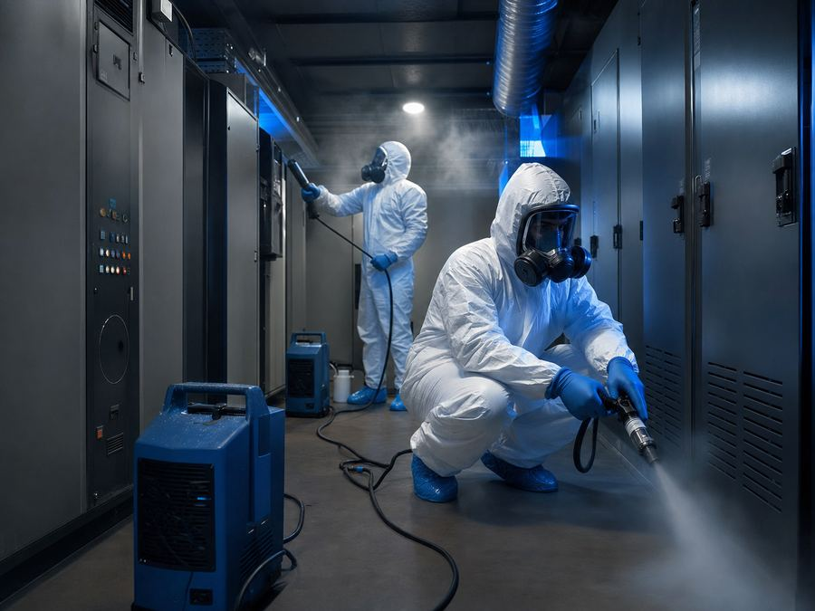

Limpieza de humo y hollín para oficinas corporativas en Madrid
Proceso de Limpieza Post-Incendio en Madrid
- 1. Inspección técnica Evaluamos daño, accesos, ventilación y riesgos en Madrid.
- 2. Contención y protección Sectorización de zonas no afectadas con cortinas de presión.
- 3. Retirada de residuos Aspiración HEPA H14, hielo seco o láser según superficie.
- 4. Desodorización Ozono industrial, fogging o neutralización de pH.
- 5. Informe pericial Documentación técnica con fotografías y alcance ejecutado.
Respuesta técnica para siniestros con humo, hollín, olor persistente y residuos de combustión. Enfoque B2B, trazabilidad documental e informe compatible con peritación.

Si has sufrido un incendio en Madrid, el tiempo cuenta: el hollín reacciona con superficies en las primeras 24-72 horas y el olor se fija si no se actúa pronto. Déjanos tu teléfono y te llamamos en minutos para coordinar la visita técnica.
Nosotros te llamamos
Déjanos tu nombre, teléfono y población y te llamamos para valorar el siniestro y orientar los siguientes pasos.
En Madrid, Galaxia interviene en limpieza de humo y hollín con criterios de descontaminación post-incendio, control documental y planificación orientada a continuidad operativa. El servicio está diseñado para peritos, administradores de activos, responsables de mantenimiento y direcciones de operaciones que necesitan una respuesta verificable, no una limpieza genérica.
La zona presenta actividad vinculada a comunidades residenciales y escenarios habituales de riesgo en garajes comunitarios. Por eso la inspección inicial diferencia hollín graso, partículas secas, residuos de combustión, olor persistente y afectación de climatización. Desde la sede de Madrid, el desplazamiento técnico estimado se organiza sobre una distancia operativa de 295 km y se coordina con operativos municipales y provinciales de extinción cuando el siniestro lo requiere.
Protocolo técnico para oficinas corporativas en Madrid
El trabajo se estructura en cinco fases: contención de zona, lectura de superficies, retirada de residuo carbonizado, desodorización industrial y verificación final. En cada fase se documentan incidencias, fotografías de avance, materiales tratados y criterios de seguridad. La prioridad es reducir partículas, estabilizar olores y devolver el inmueble a un estado controlable para reparación, peritación o reapertura.
Cuando el siniestro afecta a oficinas corporativas, los equipos pueden combinar filtración HEPA H14, aspiración controlada, limpieza por hielo seco CO₂, fogging térmico, ozono industrial y neutralización de pH en superficies compatibles. La selección se realiza tras prueba en zona no visible para evitar migración de hollín, veladuras o daños secundarios.
%%INSTRUCCIONES%% Variables: CIUDAD CIUDAD_MIN PROVINCIA DOMINIO URL_BASE TELEFONO TEL_PLANO EMAIL EMPRESA ANOS DESDE SLUG FIN DE INSTRUCCIONES — EL SPINTAX EMPIEZA EN LA LÍNEA SIGUIENTE
Incendio en oficina de CIUDAD: cómo volver a trabajar cuanto antes Limpieza de incendios en oficinas de CIUDAD: datos, equipos y continuidad de negocio Cuando el fuego afecta a tu oficina en CIUDAD: lo que debes hacer en las primeras horas Incendio en espacio de trabajo de CIUDAD: protocolo de limpieza y recuperación de datos Limpieza post-incendio en oficinas de CIUDAD: técnicas para recuperar el entorno de trabajo Un incendio en tu oficina de CIUDAD: la hoja de ruta para volver a la actividad
En una oficina, un incendio no para solo las sillas y las mesas. Para los procesos, los servidores, los contratos en papel y los equipos que sostienen el negocio. Cuando el fuego entra en una oficina de CIUDAD, el problema más urgente no es la limpieza: es la continuidad del negocio y la recuperación de los activos de información que pueden estar comprometidos. Un incendio en un espacio de trabajo de CIUDAD afecta simultáneamente a las personas, a los equipos, a los datos y a la imagen que el negocio proyecta ante clientes y proveedores.
Cuando el fuego afecta a una oficina en CIUDAD —ya sea un despacho profesional, una oficina corporativa, un coworking, un call center o las instalaciones de una pyme—, la rapidez de la respuesta determina cuántos días de trabajo se pierden y cuántos activos de información son recuperables. Cuando las llamas alcanzan un espacio de trabajo de CIUDAD, los equipos informáticos, los archivos en papel, los servidores y los sistemas de comunicación se convierten en el centro de la preocupación, por delante del aspecto físico del espacio. Cuando un incendio compromete las oficinas de una empresa en CIUDAD, el daño visible —muebles quemados, paredes ennegrecidas— suele ser menor que el daño real: hollín en servidores, contaminación de archivos físicos, exposición de datos sensibles.
En EMPRESA llevamos ANOS años interviniendo en siniestros por incendio en oficinas de CIUDAD y de toda España. Sabemos que lo que más preocupa no es cuánto cuesta la limpieza —el seguro lo cubre—, sino cuándo pueden volver los empleados a trabajar con normalidad. Desde DESDE, EMPRESA ha gestionado siniestros post-incendio en todo tipo de oficinas de CIUDAD: despachos de abogados, oficinas de seguros, sedes corporativas, centros de llamadas, espacios de coworking. Cada tipo tiene sus particularidades y nosotros las conocemos. Con ANOS años de experiencia en CIUDAD, EMPRESA tiene el protocolo específico para oficinas que minimiza el tiempo de inactividad y protege los activos de información que el fuego y el humo pueden haber comprometido. -- Los focos de incendio más habituales en oficinas de CIUDAD ## Dónde empieza el fuego en una oficina de CIUDAD ## El origen más frecuente de los siniestros en espacios de trabajo de CIUDAD
Los incendios en oficinas de CIUDAD tienen focos muy específicos que determinan el tipo de contaminación y la estrategia de limpieza: Los siniestros en espacios de trabajo de CIUDAD responden a patrones bien conocidos que condicionan directamente el protocolo de intervención: Las causas más frecuentes de incendio en oficinas de CIUDAD son:
Incendios eléctricos en cuadros de distribución, regletas sobrecargadas o equipos con fallo interno: el foco más habitual en oficinas de CIUDAD con alta densidad de equipos informáticos. Generan hollín muy fino con carga electrostática que penetra en los equipos y es extremadamente difícil de eliminar. Incendios en salas de servidores o CPDs: espacios con alta concentración de equipos electrónicos, cableado y sistemas de alimentación ininterrumpida. El hollín en servidores puede arruinar hardware aparentemente intacto en horas si no se interviene con hielo seco u otras técnicas específicas. Incendios en archivos o almacenes de documentación: el papel es un combustible perfecto. Cuando arde un archivo de CIUDAD, la ceniza y el hollín contaminan zonas muy alejadas del foco y pueden comprometer documentación que no ha sido directamente afectada por el fuego.
Señales locales y coordinación operativa
Para intervenciones en Madrid, se reserva una ventana de visita de 72 h según accesos, disponibilidad de suministro, autorización pericial y nivel de contaminación. Se priorizan inmuebles con actividad económica, zonas comunes críticas, salas técnicas y espacios donde la parada operativa incremente el coste del siniestro.
La actuación se entrega con resumen técnico, relación de zonas tratadas y recomendaciones para siguientes gremios. Si existe aseguradora, el equipo puede preparar información compatible con gestión de siniestros, incluyendo fotografías, alcance, fases ejecutadas y observaciones relevantes.
Preguntas técnicas frecuentes en Madrid
¿La limpieza de humo y hollín elimina también el olor?
La eliminación del olor exige combinar retirada de residuo, filtración y tratamiento molecular. Si se aplica ozono o fogging sin limpiar la carga de hollín, el olor puede reaparecer.
¿Se puede intervenir antes de cerrar la peritación?
Normalmente se recomienda documentar el estado inicial y coordinar autorizaciones. Galaxia puede preparar una visita técnica para delimitar daños sin comprometer la trazabilidad.
¿Trabajan en horario urgente?
Sí. La respuesta 24/7 se enfoca a estabilización, contención de partículas, evaluación de accesos y planificación de recuperación.
Consulta nuestro catálogo de servicios técnicos, las preguntas frecuentes que resolvemos con peritos y administradores, o algunos de nuestros casos documentados con superficie, plazos y KPI.
Enlaces técnicos relacionados
Zonas relacionadas
Nosotros te llamamos
Déjanos tu nombre, teléfono y población y te llamamos para valorar el siniestro y orientar los siguientes pasos.